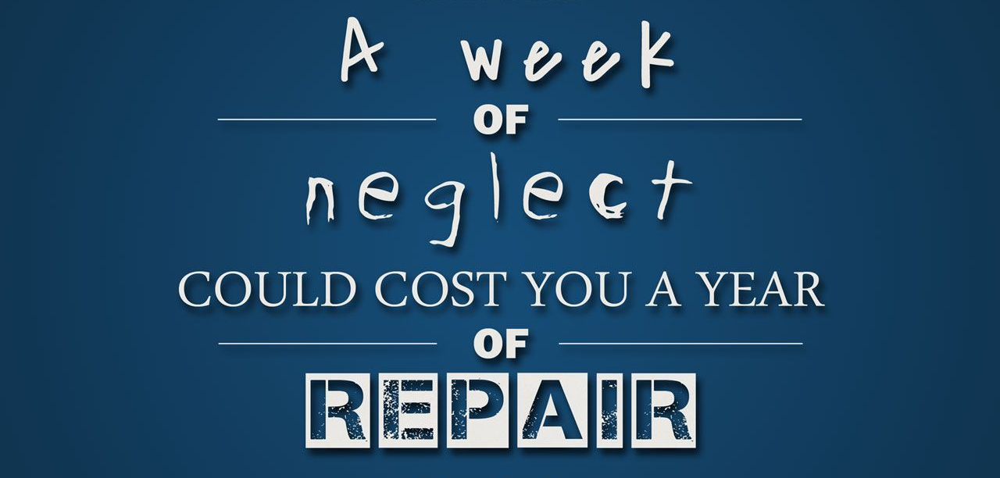

Mindset & Wellness
Fitness - From The Inside Out

Fitness, in general, is a very broad term to understand. When I think of fitness I begin to think about conquering the highest mountains and diving deep into the lowest depths of the ocean.. or maybe just being able to confidently climb the steps up to the front door of the house at 60 years young because 60 really isn't that old anymore. 70 is turning out to be the new 40 these days.
Picture yourself looking in a full body mirror. Clothing is optional, head to toe. What's the first thing you think of? Maybe it's, "Oooooo, yes, you fine," or "Disgusting," or "I'm too fat," or "I'm too skinny," or "I gotta put on more muscle and tone up a bit," or it could even be "I really need to vacuum the floor of my house." Any of these options are acceptable, but what about when you close your eyes and think about how you feel? Not so much as to what you see in the mirror, but more of what direction you are heading with your current lifestyle as it relates to health and fitness.
"It's all in your head."
You've probably heard that one before, but have you ever really absorbed the information and thought about the different meanings that statement could have for you? Let's try to figure it out together.
First off, in your head, it's where it all starts. From the inside out. From the moment you decide that the past life you've been living is not what is destined for you, then you will be able to make some positive changes for your future self. However, this is only the beginning. Once you've made your decision to make these changes then there is only one thing left to do, and that is to DO IT!
Furthermore, there are objective measurements that everybody has access to that can open your eyes to what's actually happening on the inside of your body. After you've decided to begin your inward journey of fitness you can begin to gather this critical information so you know exactly where you stand. From target heart rate to body fat percentage and one-rep max testing, these are only a few examples that can give you a starting point to realizing you're on your way to a new and improved body. All you have to do from there is eat the good foods and make the good workouts happen. It's very simple. You may even want to get yourself with a personal trainer that will be able to help you out. For another example, let's say you think you're overweight, and you want to lose some pounds. That's all fine and dandy, BUT how many pounds are you thinkin'? A few? 10? 20? 100? The only way to know is to jump on the scale and set that goal for yourself.
Goals are what pull you toward whatever it is you are trying to achieve. After all, who are you doing this for anyways? It is your goal and nobody else's. The best way to set a goal is to write it down, and be specific! A goal to lose 30 pounds by the last day of the year is a much better goal than to lose weight some day in the distant future because who knows when that could be?! I, for one, enjoy knowing exactly where I'm heading, and that's why it's so important to write down your goals on paper so you can see it with your eyes. Look at it as often as possible. Also, don't forget to visualize what you see yourself becoming.
Visualization is used only by the people that really believe in their right mind that they will be achieving the goals they set for themselves. The people that are truly committed see themselves as they are, and then they see themselves looking the way they want or doing the things they told themselves they'd do. I personally used to hang up a picture of a magazine cut-out in my bathroom that had the picture of the body type I wanted for myself. Cut the head off, put yours on top, and there you have it. You are one step closer to training your brain into thinking that you already have achieved your goal. No matter what your goals are, this process will soon transfer from your brain to your body in no time, as long as you are consistent.
All things considered, consistency is the key. I can't stress this one enough. That's why I saved it for last. I like to say movement is energy, and without movement or some kind of action on a consistent basis there will be no forward progress. Jim Rohn, the famous philosopher, always used to say, "A week of neglect could cause you a year of repair." If your body were your business and you were the owner, you wouldn't want that for your business would you? Do not neglect. Take care. Do what needs to be done, day in and day out. No time wasted. Stay humble, but feel free to own your progress once you've earned it. You owe it to yourself.